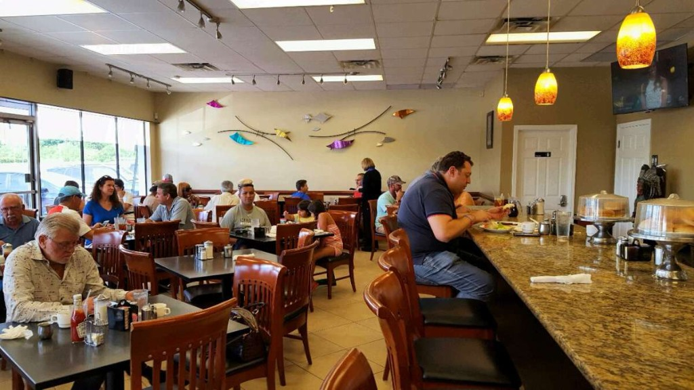
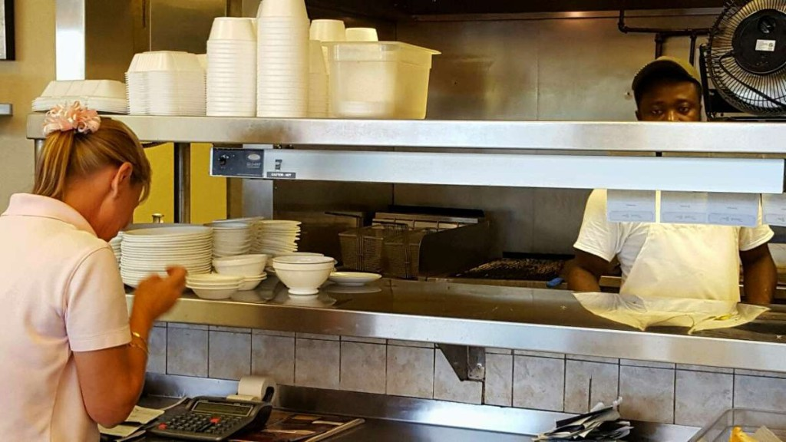
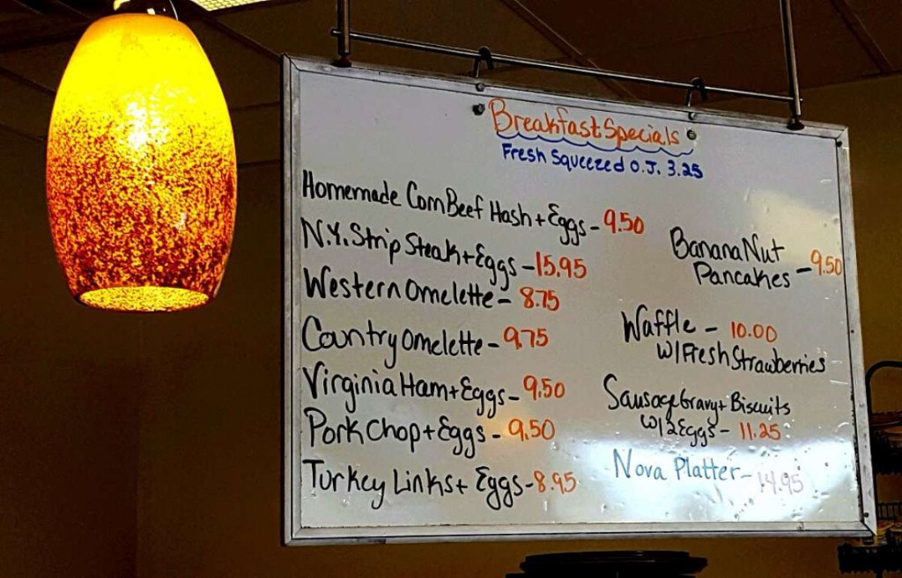

Shredded, golden outside, soft inside. The reason a lot of first-timers come back.

Open every day · 6 a.m. – 3 p.m.
Coffee's on.
Board's up.
A neighborhood diner in Dania Beach serving homemade breakfast and lunch since 1993. Hash browns with a crisp edge, real roast turkey, and waitresses who still call you hon.
The whole show
Breakfast, lunch, and the board in between.
Robert's is a small diner in a Stirling Road plaza — the kind of place you find because a local told you to. We cook it fresh, pour the coffee until you say when, and close when the lunch rush is done.
6 a.m.Doors open, seven days
3 p.m.Kitchen closes, lights dim
’93Same neighborhood, same idea

Written this morning
The specials board.
If it is on the whiteboard, it is what the kitchen is proud of today. Specials change. The handwriting stays the same.

From today's boards
- Homemade corned beef hash & eggs 9.50
- Banana nut pancakes 9.50
- Sausage gravy, biscuits & two eggs 11.25
- Fresh roast turkey with stuffing 12.95
- Reuben with cole slaw 10.50
- Cuban sandwich 10.50
- Homemade baked meatloaf 10.95
- Broiled or blackened mahi mahi 13.95
What people drive over for
The usual, done right.
Homemade, not from a tin. Regulars ask which days it is on the board.
Sliced for platters, clubs, and hot open-faced sandwiches. Not just a November thing.
On rye, with Swiss, sauerkraut, and Thousand Island. Cole slaw on the side.
From the counter
They treat you like a regular. Even if you are not one yet.
“The eggs were fluffy and buttery, the rye toast golden, and the hash browns cooked to perfection.”
Mary · Let's Eat, South Florida
“This is the real deal. Nothing coming out of a bag. All from scratch.”
TripAdvisor guest
“Robert's is our go-to place for real turkey all year long.”
Dorothy · Dania regular
Come sit down
1320 Stirling Road, suite 1C.
In the plaza off Stirling in Dania Beach. Parking out front, more around the buildings when the morning rush fills up. Close to FLL and the cruise port if you need a real breakfast before you fly or sail.